Depois de anos em silêncio
Fernandes Stratocaster & Tanglewood — um retorno à música.
The case
Dois instrumentos, uma mesma história.
Uma Fernandes Stratocaster e um violão Tanglewood chegaram à oficina depois de permanecerem por muitos anos guardados dentro de seus cases. O tempo parado deixa marcas, mesmo quando um instrumento permanece protegido. Antes de voltarem à rotina de um músico, os dois precisavam de uma avaliação cuidadosa, limpeza e os ajustes necessários para recuperar suas condições de uso.
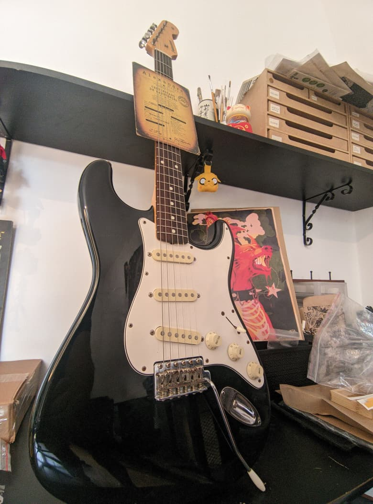
Construction note
Uma Fernandes japonesa que merece ser preservada.
Mesmo antes da manutenção, a Fernandes chama atenção pela impressão de construção cuidadosa. O instrumento apresenta uma concepção sólida e coerente, com detalhes de acabamento e montagem que reforçam a sensação de um instrumento feito para durar.
Para a oficina, esse é um ponto importante: uma boa manutenção não precisa apagar a passagem do tempo. Ela deve preservar aquilo que foi bem construído e devolver ao instrumento as condições para continuar cumprindo sua função.
“Quando a construção é boa, o trabalho da oficina começa pela preservação — não pela substituição.”
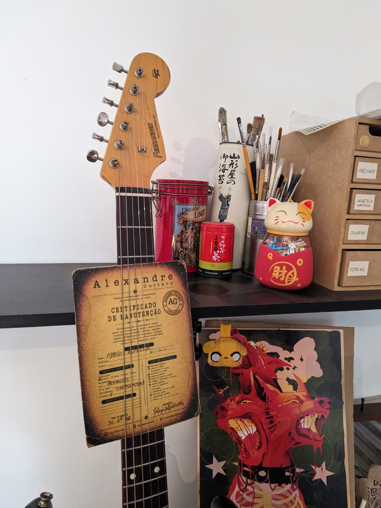
Before
O tempo também aparece nos detalhes.
As fotografias de entrada registram a condição dos instrumentos antes da intervenção. Na Fernandes, o tempo aparece com mais clareza nos componentes e nas superfícies. Já o violão Tanglewood conseguiu se manter em bom estado geral, em grande parte por ter permanecido protegido dentro de seu case durante os anos em que ficou guardado.
Mesmo protegido, o longo período sem uso pedia uma revisão cuidadosa. O objetivo era recuperar a limpeza, conferir as condições gerais e devolver aos dois instrumentos os ajustes necessários para voltarem à música.
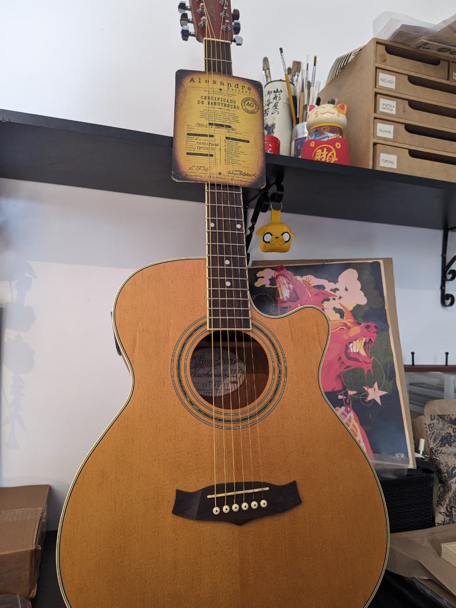
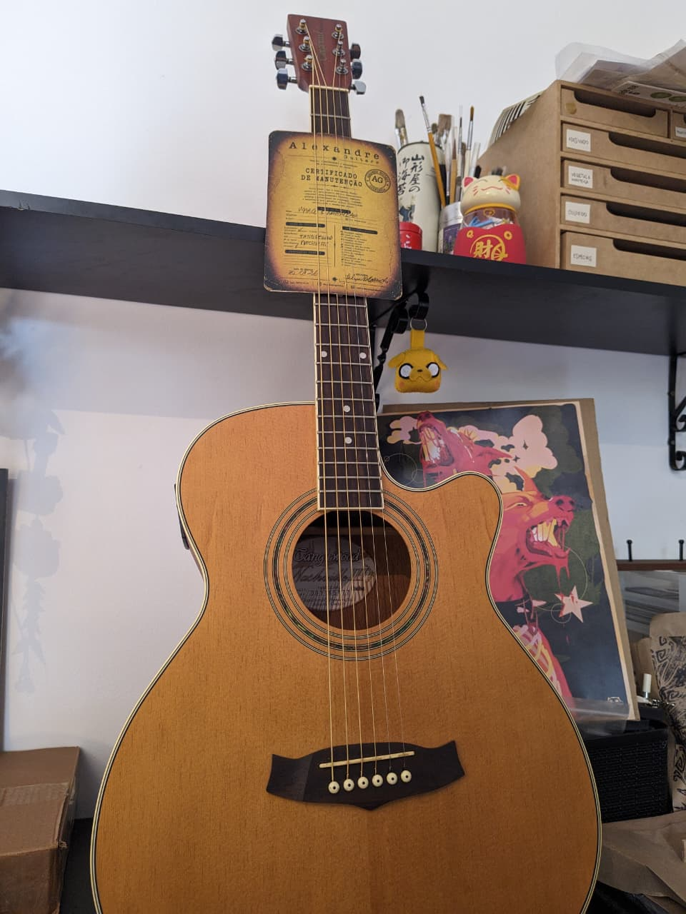
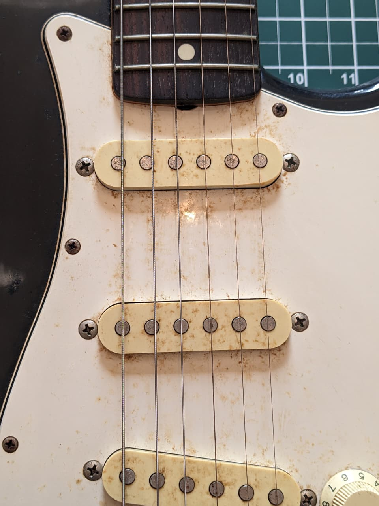
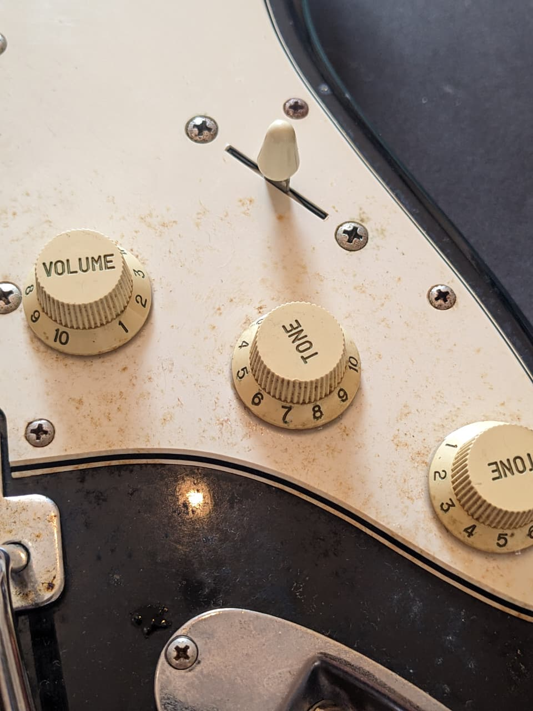
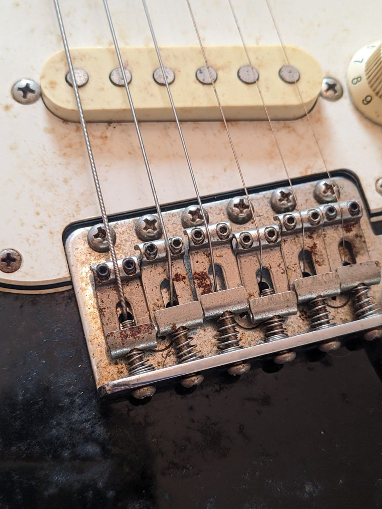
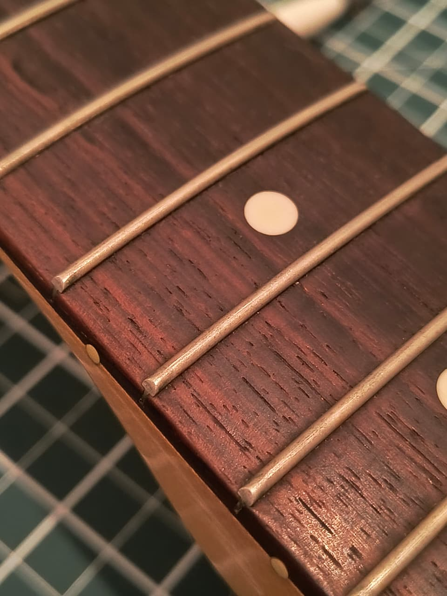
Workshop
Limpeza, manutenção e regulagem.
O trabalho foi conduzido com uma abordagem de preservação: primeiro recuperar a limpeza e as condições gerais dos instrumentos; depois realizar os ajustes necessários para devolver conforto, estabilidade e tocabilidade.
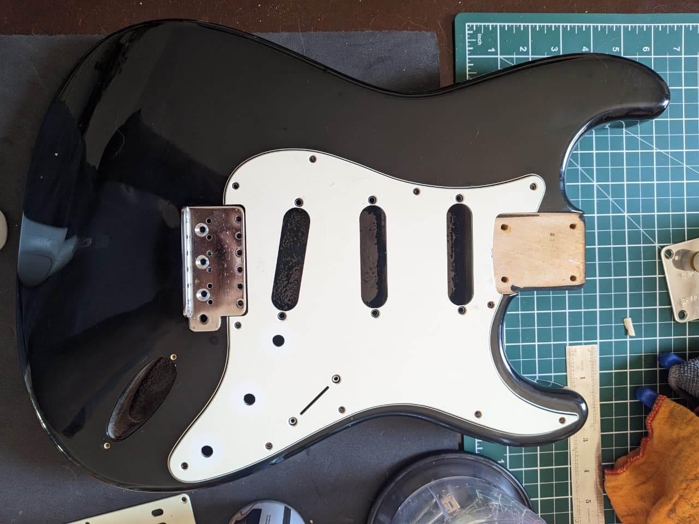
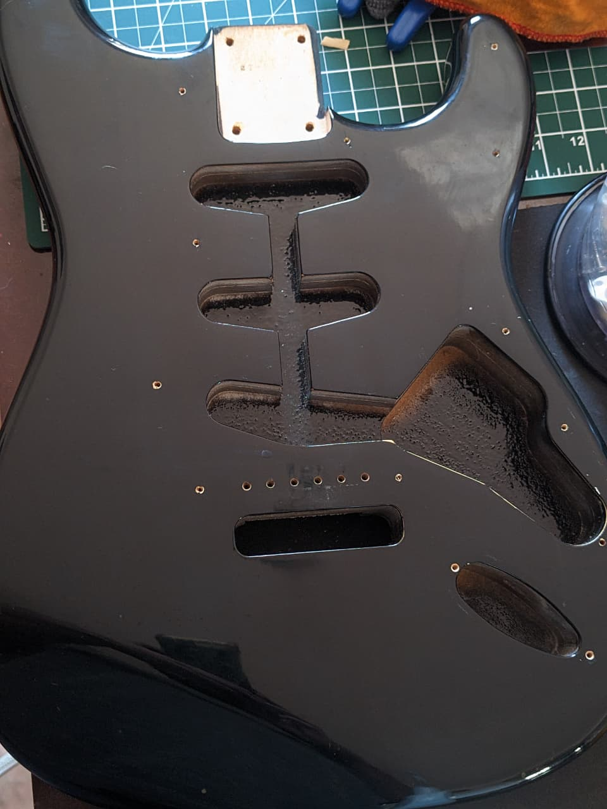
After
O resultado aparece nos detalhes.
Depois da manutenção, os registros mostram a recuperação visual dos componentes e o retorno dos instrumentos a uma condição mais adequada de uso. Na Fernandes, a diferença aparece principalmente nos componentes que receberam limpeza e cuidado. No Tanglewood, que já havia se mantido bem protegido dentro do case, a intervenção teve um caráter mais preservacionista: limpar, conferir e regular sem apagar os sinais de sua história.
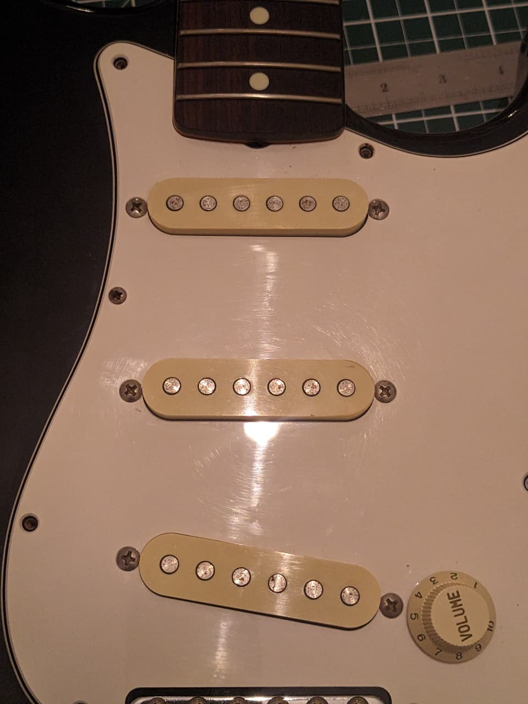
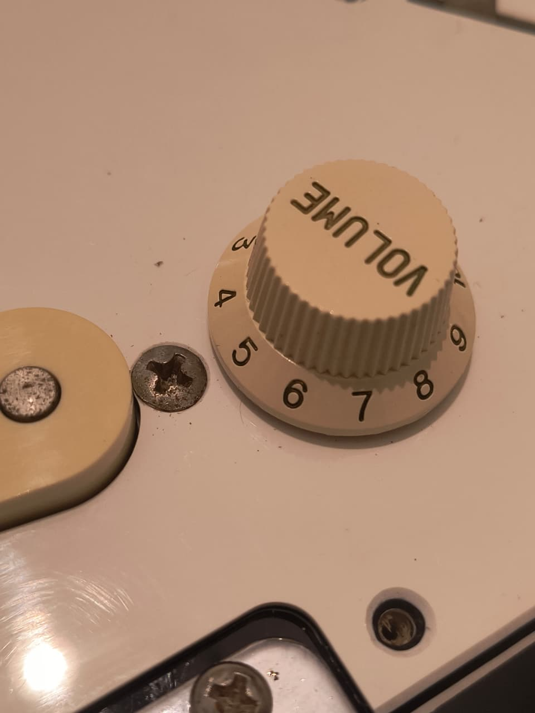
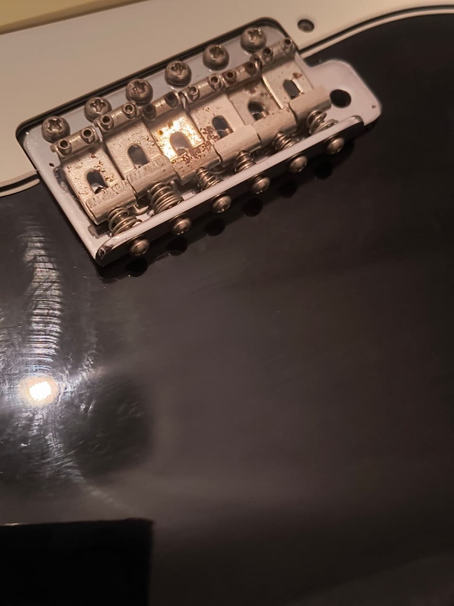
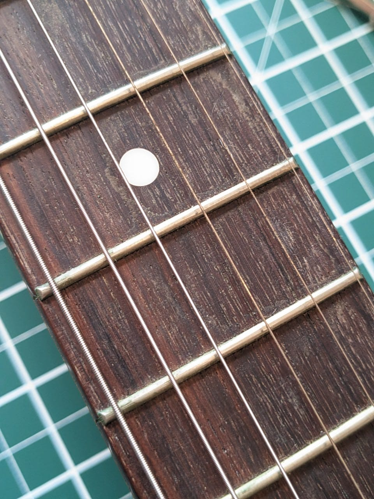
Closing note
O silêncio terminou.
Mais do que simplesmente colocar dois instrumentos de volta em ordem, este trabalho marcou o retorno de ambos à música. A Fernandes, com sua boa construção japonesa, recebeu uma manutenção cuidadosa para preservar suas características e recuperar sua tocabilidade. O Tanglewood, que conseguiu se manter bem preservado por permanecer dentro de seu case, recebeu limpeza, manutenção e regulagem para voltar a ser utilizado com segurança e conforto.
preservar · recuperar · continuar
“Alguns instrumentos passam anos esperando. Quando voltam, a história continua.”
AG-WR-001 · Workshop Records